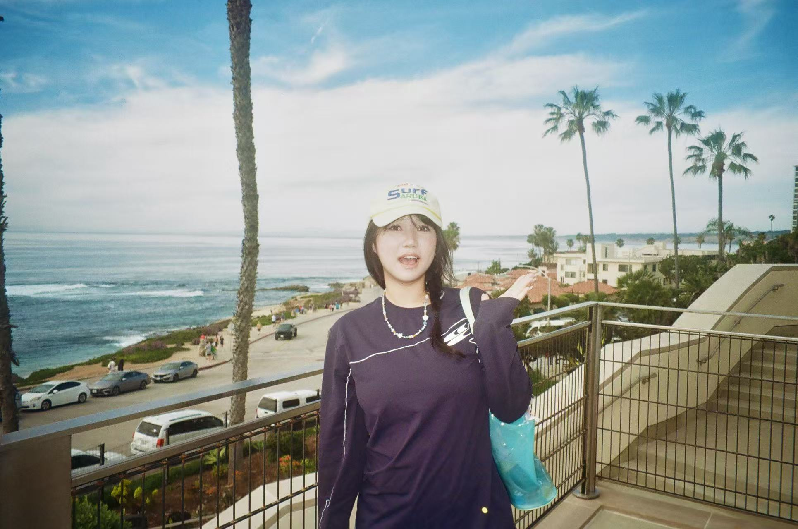

click any polaroid to develop —
Alana Pang

About Me
Hello! I'm Alana Pang and welcome to my site! I'm a bilingual marketing and communications professional specializing in paid media, content strategy, creative production, and campaign analytics. With experience across advertising, entertainment, and non-profit organizations, I combine data-driven insights with strong storytelling to build engaging campaigns, strengthen brand presence, and connect meaningfully with diverse audiences.